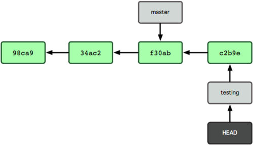
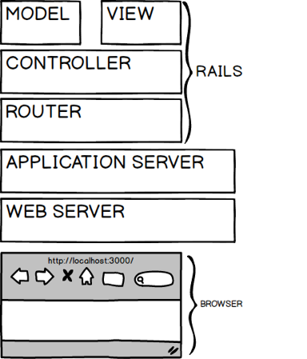

Proceso secuencial
En este ejemplo no hay solapamiento

| z, ? | toggle help (this) |
| space, → | next slide |
| shift-space, ← | previous slide |
| d | toggle debug mode |
| ## <ret> | go to slide # |
| c, t | table of contents (vi) |
| f | toggle footer |
| r | reload slides |
| n | toggle notes |
| p | run preshow |
| P | toggle pause |

Profesor: Lic. Christian A. Rodríguez


JTP: APU Nahuel Cuesta Luengo
Ayudantes:
Colaboradores:

TTPS - Opcion
Ruby por Christian A. Rodriguez se encuentra bajo
una Licencia
Creative Commons Atribución-NoComercial-CompartirIgual 3.0 Unported.


Pero... ¿Cómo planificar sin saber qué hacer?
¿Si deseamos obtener validaciones frecuentes con el cliente?
 ¿Y con pruebas de regresión entre iteraciones?
¿Y con pruebas de regresión entre iteraciones?


Para cada caso de uso implementado en la iteración, sus actividades se encadenan en una mini cascada

Estamos descubriendo formas mejores de desarrollar software tanto por nuestra propia experiencia como ayudando a terceros. A través de este trabajo hemos aprendido a valorar:
Individuos e interacciones sobre procesos y herramientas Software funcionando sobre documentación extensiva Colaboración con el cliente sobre negociación contractual Respuesta ante el cambio sobre seguir un plan
Esto es, aunque valoramos los elementos de la derecha, valoramos más los de la izquierda.
Nuestra mayor prioridad es satisfacer al cliente mediante la entrega temprana y continua de software con valor.
Aceptamos que los requisitos cambien, incluso en etapas tardías del desarrollo. Los procesos Ágiles aprovechan el cambio para proporcionar ventaja competitiva al cliente.
Entregamos software funcional frecuentemente, entre dos semanas y dos meses, con preferencia al periodo de tiempo más corto posible.
Los responsables de negocio y los desarrolladores trabajamos juntos de forma cotidiana durante todo el proyecto.
Los proyectos se desarrollan en torno a individuos motivados. Hay que darles el entorno y el apoyo que necesitan, y confiarles la ejecución del trabajo.
El método más eficiente y efectivo de comunicar información al equipo de desarrollo y entre sus miembros es la conversación cara a cara.
El software funcionando es la medida principal de progreso.
Los procesos Ágiles promueven el desarrollo sostenible. Los promotores, desarrolladores y usuarios debemos ser capaces de mantener un ritmo constante de forma indefinida.
La atención continua a la excelencia técnica y al buen diseño mejora la Agilidad.
La simplicidad, o el arte de maximizar la cantidad de trabajo no realizado, es esencial.
Las mejores arquitecturas, requisitos y diseños emergen de equipos auto-organizados.
A intervalos regulares el equipo reflexiona sobre cómo ser más efectivo para a continuación ajustar y perfeccionar su comportamiento en consecuencia.
SCRUM se basa en lo que se conoce como Sprints
Un sprint concentra el esfuerzo durante un período corto de tiempo hacia metas prefijadas

Las dos primeras preguntas ofrecen a los participantes una visión global del avance del proyecto. La tercera, sirve para solucionar problemas


$ git init
$ git clone https://github.com/rails/rails.git


$ git checkout testing

$ vi test.rb
$ git commit -am 'made a change'

$ git checkout master

$ vi test.rb
$ git commit -am 'made other changes'


$ git checkout master
$ git merge hotfix


$ git checkout master
$ git merge iss53


$ git checkout experiment
$ git rebase master


Lecturas
Juegos:


Ruby is designed to make programmers HAPPY


NombreDeClaseOModulo
CONSTANTE
@nombre_de_atributo
@@atributo_de_clase
$variable_global
nombre_de_metodo
metodo_peligroso!
metodo_que_pregunta?"Aprendiendo ruby".length["Mateo", "Lola", "Lihue", "Clio"].sort-100.absnil.nil?1.object_idnil.object_id([1,2,3] + [4,5,6]).last3
3.14
1_999_235_243_888 == 19992352438880b1000_1000 #Binario => 132
010 # Octal => 8
0x10 # Hexadecimal => 16'sin interpolar'
"Interpolando: #{'Ja'*3}!"%q/Hola/
%q!Chau!
%Q{Interpolando: #{3+3}}
un_string = <<EOS
Este es un texto
de mas de una linea
que termina aqui
EOS
un_string.upcase:action, :line_items, :+:uno.object_id # siempre devolverá lo mismo
"uno".object_id # siempre devolverá diferente
['Hola', 'Chau]
%w(Hola Chau #{2+2}) # sin interpolar
%W(Hola Chau #{2+2}) # interpolando
[1,2,3,4]# Versión 1.8
{
:nombre => 'Christian',
:apellido => 'Rodriguez'
}
# Versión > 1.8
{
nombre: 'Christian',
apellido: 'Rodriguez'
}0..1
0..10
"a".."z"
"a"..."z"("a"..."z").to_a(1..10) === 5 # => true
(1..10) === 15 # => false
(1..10) === 3.1 # => trueuno = lambda { |n| n * 2 }
dos = ->(n, m){ n * 2 + m }
tres = ->(n, m=0){ n * 2 + m}
# Entonces
uno.call 2 # => 4
dos.call 2,3 # => 7
tres.call 2 # => 410 - 210.send :-, 2[1,2,3] - [1]a = 3.14estado = nil
#...
face = case estado
when "Feliz" then ":)"
when "Triste" then ":("
else ":|"
enddef foo
"bar"
endEn versiones previas a la 2.0 retorna nil, en versiones superiores el símbolo con el nombre del método
RUBY_VERSION
def foo; endSu ejecución retorna "bar"
3.times do |i|
puts i
end
# 0
# 1
# 2
# => 3 (retorna el 3 que recibe .times)
3.times { |x| puts x }(1..10).select { |n| n.even? }
# o lo que es igual:
(1..10).select(& :even?)(1..10).map { |n| n*2 }
# o lo que es igual:
(1..10).collect { |n| n*2 }(1..100).reduce { |sum,n| sum + n }
# o lo que es igual:
(1..100).reduce(:+)# La formula de verificacion es: n*(n+1)/2
100*101/2File.open('my.txt').each do |line|
puts line if line =~ /ruby/
endSi veo un pájaro que camina como pato, nada como pato y hace "cuack" como pato, entonces llamaré a ese pájaro un pato
public interface DuckLike {
Cuack cuack();
}
//...
public void doSomething(DuckLike d) {
d.cuack();
// ...
}import java.lang.reflect.InvocationHandler;
import java.lang.reflect.InvocationTargetException;
import java.lang.reflect.Method;
import java.lang.reflect.Proxy;
public class DuckTyping {
interface Walkable { void walk(); }
interface Swimmable { void swim(); }
interface Quackable { void quack(); }
public static void main(String[] args) {
Duck d = new Duck();
Person p = new Person();
as(Walkable.class, d).walk(); //duck can walk()
as(Swimmable.class, d).swim(); //duck can swim()
as(Quackable.class, d).quack(); //duck can quack()
as(Walkable.class, p).walk(); //person can walk()
as(Swimmable.class, p).swim(); //person can swim()
// Gives Runtime Error
as(Quackable.class, p).quack(); //person can't quack()
}
//... @SuppressWarnings("unchecked")
static <T> T as(Class<T> t, final Object obj) {
return (T) Proxy.newProxyInstance(t.getClassLoader(),
new Class[] {t},
new InvocationHandler() {
public Object invoke(Object proxy,
Method method,
Object[] args) throws Throwable {
try {
return obj.getClass()
.getMethod(method.getName(),
method.getParameterTypes())
.invoke(obj, args);
} catch (NoSuchMethodException nsme) {
throw new NoSuchMethodError(
nsme.getMessage());
} catch (InvocationTargetException ite) {
throw ite.getTargetException();
}
}
});
}
}
//....class Duck {
public void walk() {
System.out.println("I'm Duck, I can walk...");
}
public void swim() {
System.out.println("I'm Duck, I can swim...");
}
public void quack() {
System.out.println("I'm Duck, I can quack...");
}
}
class Person {
public void walk() {
System.out.println("I'm Person, I can walk...");
}
public void swim() {
System.out.println("I'm Person, I can swim...");
}
public void talk() {
System.out.println("I'm Person, I can talk...");
}
}class Duck
def quack
puts "Quaaaaaack!"
end
def feathers
puts "The duck has white and gray feathers."
end
end
class Person
def quack
puts "The person imitates a duck."
end
def feathers
puts "The person takes a feather from the ground"
end
end
def in_the_forest duck
duck.quack
duck.feathers
end
donald = Duck.new
john = Person.new
in_the_forest donald
in_the_forest john(1..10).even # da error: even no existe
class Range
# Agregamos even a Range
def even
self.select(& :even?)
end
end
(1..10).even # ahora no da error
# => [2,4,6,8,10]module MyAPI
class User
...
end
def self.configuration
...
end
end
user = MyAPI::User.new
puts MyAPI::configurationComo las interfaces, pero con comportamiento
module MyLog
def log(msg)
puts "Log: #{msg}"
end
endclass String; include MyLog; end
"hola".log("pepe")
#Log: pepe
# => nil cd para cambiar de versión de ruby~/.rbenv
$ git clone https://github.com/sstephenson/rbenv.git ~/.rbenv
~/.rbenv/bin a $PATH
$ echo 'export PATH="$HOME/.rbenv/bin:$PATH"' >> ~/.bash_profile
En ubuntu, hacer el echo en .bashrc en vez de .bash_profile
rbenv init al shell para habilitar el autocompletado
$ echo 'eval "$(rbenv init -)"' >> ~/.bash_profile
En ubuntu, hacer el echo en .bashrc en vez de .bash_profile
$ exec $SHELL -l
~/.rbenv/plugins
$ git clone https://github.com/sstephenson/ruby-build.git ~/.rbenv/plugins/ruby-build
rbenv y todos sus plugins~/.rbenv/plugins
$ git clone https://github.com/rkh/rbenv-update.git ~/.rbenv/plugins/rbenv-update
rbenv versions muestra las versiones instaladas de ruby (con un * la versión actual)rbenv global muestra o setea la versión global de ruby
$ rbenv global # muestra la versión global
$ rbenv global 2.0.0-p247 # setea la versión 2.0.0-p247 como global
rbenv local identico al comando anterior, pero para el directorio actual
rbenv install instala rubies! (con -l listamos todas las versiones disponibles)
Luego de haber recibido una dosis de Ruby ya conocemos un poco sobre la sintáxis de este lenguaje
Para entender mejor los objetos, vamos a hacerlo mediante un ejemplo -tomado del libro Programming Ruby (Pick Axe):
Reventa de libros usuados que realiza control de stock semanalmente
Mediante lectores de códigos de barra se registra cada libro en las bibliotecas. Cada lector, genera un archivo separado por comas (CSV) que contiene una fila para cada libro registrado.
Cada fila contiene entre otros datos: ISBN del libro y precio. Un extracto del archivo sería:
"Date","ISBN","Amount"
"2008-04-12","978-1-9343561-0-4",39.45
"2008-04-13","978-1-9343561-6-6",45.67
"2008-04-14","978-1-9343560-7-4",36.95BookInStockRecordamos que los nombres de las clases deben comenzar con mayúsculas, los métodos con minúscula
class BookInStock
endLo probamos:
a_book = BookInStock.new
another_book = BookInStock.newEn el ejemplo anterior:
BookInStock. Lo solucionamos obligando que la inicialización indique aquellos datos que distinga al libro
class BookInStock
def initialize(isbn, price)
@isbn = isbn
@price = Float(price)
end
endinitialize es especial en Ruby new, Ruby aloca memoria para alojar un objeto no
inicializado y luego invoca al método initialize pasándole cada parámetro
que fue enviado a newinitialize nos permite configurar el estado inicial de nuestros objetosinitializeinitialize@isbn e isbn están relacionadas, pero:
Float
toma un argumento y lo convierte a float, terminando el programa si falla
la conversiónAnalizar cómo es que Float es un método
b1 = BookInStock.new("isbn1", 3)
p b1
b2 = BookInStock.new("isbn2", 3.14)
p b2
b3 = BookInStock.new("isbn3", "5.67")
p b3p porque imprime el estado interno de los objetos. puts por defecto imprime #<nombre_de_clase:id_objeto_en_hex>
to_s, que es enviado a cualquier objeto que necesita convertirse a string to_sclass BookInStock
def to_s
"ISBN: #{@isbn}, price: #{@price}"
end
endBookInStock con el fin de agregar atributos
para isbn y price así podemos contabilizarlosclass BookInStock
def isbn
@isbn
end
def price
@price
end
endaccesor porque mapean
directamente con las variables de instanciaattr_readerattr_readerclass BookInStock
attr_reader :isbn, :price
def initialize(isbn, price)
@isbn = isbn
@price = Float(price)
end
# ..
endattr_reader define variables de instancia, y no lo hace
price=class BookInStock
attr_reader :isbn, :price
def initialize(isbn, price)
@isbn = isbn
@price = Float(price)
end
def price=(new_price)
@price = new_price
end
# ...
endbook = BookInStock.new("isbn1", 33.80)
puts "ISBN = #{book.isbn}"
puts "Price = #{book.price}"
book.price = book.price * 0.75 # discount price
puts "New price = #{book.price}"attr_reader ruby provee un shortcut para accessors de
sólo escritura: attr_writer (raramente usado)attr_accessor que provee acceso R/Wclass BookInStock
attr_reader :isbn
attr_accessor :price
def initialize(isbn, price)
@isbn = isbn
@price = Float(price)
end
endclass BookInStock
attr_reader :isbn
attr_accessor :price
def initialize(isbn, price)
@isbn = isbn
@price = Float(price)
end
def price_in_cents
Integer(price*100 + 0.5)
end
def price_in_cents=(cents)
@price = cents / 100.0
end
# ...
endprice e isbnpriceCsvReaderclass CsvReader
def initialize
# ...
end
def read_in_csv_data(csv_file_name)
# ...
end
def total_value_in_stock
# ...
end
def number_of_each_isbn
# ...
end
endreader = CsvReader.new
reader.read_in_csv_data("file1.csv")
reader.read_in_csv_data("file2.csv")
: : :
puts "Total value in stock = \
#{reader.total_value_in_stock}"CsvReader debe ir acumulando lo que va leyendo de cada csvrequire 'csv'
class CsvReader
def initialize
@books_in_stock = []
end
def read_in_csv_data(csv_file_name)
CSV.foreach(csv_file_name, headers: true) do |row|
@books_in_stock <<
BookInStock.new(row["ISBN"], row["Amount"])
end
end
endread_in_csv_data la primer línea indica la apertura del archivo
csv_file_name y el parámetro headers: true indica a la librería que la
primer línea del archivo son los encabezados de cada columna o campoclass CsvReader
# Luego veremos como usar inject...
def total_value_in_stock
sum = 0.0
@books_in_stock.each do |book|
sum += book.price
end
sum
end
endbook_in_stock.rb: contendrá la clase BookInStockcsv_reader.rb: será el código de CsvReaderstock_stats.rb: será el programa principalrequire y require_relativestock_stats.rbrequire_relative 'csv_reader'
reader = CsvReader.new
ARGV.each do |csv_file_name|
STDERR.puts "Processing #{csv_file_name}"
reader.read_in_csv_data(csv_file_name)
end
puts "Total value = #{reader.total_value_in_stock}"self. Esto
significa que tampoco puede invocar el método privado de otra instancia de la
misma clase.class MyClass
def method #default is public
#...
end
protected # subsequent methods will be 'protected'
def method2
#...
end
private # subsequent methods will be 'private'
def method3
#...
end
public # subsequent methods will be 'public'
def method4
#...
end
endclass MyClass
def method1
end
public :method1, :method4
protected :method2
private :method3
endIs a variable an object? In Ruby, the answer is no. A variable is simply a reference to an object. Objects float around in a big pool somewhere (the heap, most of the time) and are pointed to by variables.
person1 = "Tim"
person2 = person1
person1[0] = 'J'
puts "person1 is #{person1}"
puts "person2 is #{person2}"dupperson1 = "Tim"
person2 = person1.dup
person1[0] = 'J'
puts "person1 is #{person1}"
puts "person2 is #{person2}"person1 = "Tim"
person2 = person1
person1.freeze
person2[0] = 'J'arrayhash o arreglo asociativoArray mantiene una colección de referencias a objetos. a = [ 3.14159, "pie", 99 ]
a.class
a.length
a[0]
a[1]
a[2]
a[3]
b = Array.new
b.class
b.length
b[0] = "second"
b[1] = "array"
b[][][] es un método (de instancia en la clase Array) y por tanto puede
implementarse por cualquier subclasenila = [ 1, 7, 9]
a[-1]
a[-2]
a[-99][]a = [ 1, 3, 5, 7, 9 ]
a[1, 3]
a[3, 1]
a[-3, 2]Acceder arrays con dos valores indica [start,count] y retorna siempre un
nuevo array
a = [ 1, 3, 5, 7, 9]
a[1..3]
a[1...3]
a[3..3]
a[-3..-1].. se incluye el fin de rango... se excluye el extremo final[]=[]= permite setear elementos de un array[]= se completa con nila = [ 1, 3, 5, 7, 9 ]
a[1] = 'bat'
a[-3] = 'cat'
a[3] = [ 9, 8 ]
a[6] = 99[]=a = [ 1, 3, 5, 7, 9 ]
a[2, 2] = 'cat'
a[2, 0] = 'dog'
a[1, 1] = [ 9, 8, 7 ]
a[0..3] = []
a[5..6] = 99, 98Array
pushpopstack = []
stack.push "red"
stack.push "green"
stack.push "blue"
p stack
puts stack.pop
puts stack.pop
puts stack.pop
p stackArray
unshiftshiftqueue = []
queue.push "red"
queue.push "green"
puts queue.shift
puts queue.shiftarray = [ 1, 2, 3, 4, 5, 6, 7 ]
p array.first(4)
p array.last(4)h = { 'dog' => 'canine', 'cat' => 'feline' }
h.length # => 2
h['dog'] # => "canine"
h['cow'] = 'bovine'
h[12] = 'dodecine'
h['cat'] = 99# En ruby >= 1.9
h = { dog: 'canine', cat: 'feline' }
# En ruby < 1.9
h = { :dog => 'canine', :cat => 'feline' }Calcular el número de veces que aparece una palabra en un texto
def words_from_string(string)
string.downcase.scan(/[\w']+/)
endAsumimos que counts es un Hash
if counts.has_key?(next_word)
counts[next_word] += 1
else
counts[next_word] = 1
endHash.new puede recibir como parámetro el valor usado para incializar cada
valor del Hash. (por ejemplo cuando se accede a un valor que no existe aún en
el Hash)def count_frequency(word_list)
counts = Hash.new(0)
for word in word_list
counts[word] += 1
end
counts
endVer el ejemplo completo en la carpeta samples/05/words_frequency
Minitestassert_equal que chequea si los dos parámetros
que se le envían son iguales, indicando fuertemente si así no
sucedewords_from_stringrequire_relative 'words_from_string.rb'
require 'minitest/autorun'
class TestWordsFromString < Minitest::Test
def test_empty_string
assert_equal([], words_from_string(""))
assert_equal([], words_from_string(" "))
end
def test_single_word
assert_equal(["cat"], words_from_string("cat"))
assert_equal(["cat"], words_from_string(" cat "))
end
def test_many_words
assert_equal(["the", "cat", "sat", "on","the","mat"],
words_from_string("the cat sat on the mat"))
end
def test_ignores_punctuation
assert_equal(["the", "cat's", "mat"],
words_from_string("<the!> cat's, -mat...-"))
end
endEn esta clase, los métodos que comienzan con test serán corridos por el framework de testing
count_frequencyrequire_relative 'count_frequency.rb'
require 'minitest/autorun'
class TestCountFrequency < Minitest::Test
def test_empty_list
assert_equal({}, count_frequency([]))
end
def test_single_word
assert_equal({"cat" => 1}, count_frequency(["cat"]))
end
def test_two_different_words
assert_equal({"cat" => 1, "sat" => 1},
count_frequency(["cat", "sat"]))
end
def test_two_words_with_adjacent_repeat
assert_equal({"cat" => 2, "sat" => 1},
count_frequency(["cat", "cat", "sat"]))
end
def test_two_words_with_non_adjacent_repeat
assert_equal({"cat" => 2, "sat" => 1},
count_frequency(["cat", "sat", "cat"]))
end
endsamples/05/words_frequency/top_five usamos:for i in 0...5
word = top_five[i][0]
count = top_five[i][1]
puts "#{word}: #{count}"
endEn cualquier lenguaje esto es natural
top_five.each do |word, count|
puts "#{word}: #{count}"
end
# o más simple:
top_five.each { |word, count| puts "#{word}: #{count}" }do y enddo / end|sum = 0
[1, 2, 3, 4].each do |value|
square = value * value
sum += square
end
puts sumvaluesum declarada fuera del bloque es actualizada dentro del bloque
sumsquare)# assume Shape defined elsewhere
square = Shape.new(sides: 4)
#
# .. lots of code
#
sum = 0
[1, 2, 3, 4].each do |value|
square = value * value
sum += square
end
puts sum
square.draw # BOOM!value = "some shape"
[ 1, 2 ].each {|value| puts value }
puts valuesquaresquare = "some shape"
sum = 0
[1, 2, 3, 4].each do |value; square|
square = value * value # different variable
sum += square
end
puts sum
puts squareyieldyield ruby invocará al código del bloque yielddef three_times
yield
yield
yield
end
three_times { puts "Hola" }def fib_up_to(max)
i1, i2 = 1, 1
while i1 <= max
yield i1
i1, i2 = i2, i1+i2
end
end
fib_up_to(1000) {|f| print f, " " }class Array
def my_find
for i in 0...size
value = self[i]
return value if yield(value)
end
return nil
end
end
(1..200).to_a.my_find {|x| x%5 == 0}
(1..200).to_a.my_find {|x| x == 0}Array hacen lo que hacen
mejor:
find), sería encontrar un elemento para el cual
el criterio sea verdaderoeach y collecteach es el más simple
yield para cada elementocollect también conocido como map
yield para cada elemento. El resultado lo guarda en un nuevo
arreglo que es retornado[ 1, 3, 5, 7, 9 ].each {|i| puts i }
['k','h','m','t','w'].collect {|x| x.succ }f = File.open("testfile")
f.each { |line| puts "The line is: #{line}"}
f.closef = File.open("testfile")
f.each_with_index do |line, index|
puts "Line #{index} is: #{line}"
end
f.closeinject[1,3,5,7].inject(0) {|sum, element| sum+element}
[1,3,5,7].inject {|sum, element| sum+element}
[1,3,5,7].inject(1) {|prod, element| prod*element}
[1,3,5,7].inject {|prod, element| prod*element}injectinject
[1,3,5,7].inject(:+)
[1,3,5,7].inject 100, :+
[1,3,5,7].inject(:*)Enumerator
to_enum o enum_fora = [ 1, 3, "cat" ]
h = { dog: "canine", fox: "lupine" }
# Create Enumerators
enum_a = a.to_enum
enum_h = h.to_enum
enum_a.next # => 1
enum_h.next # => [ :dog, "canine" ]
enum_a.next # => 3
enum_h.next # => [ :fox, "lupine" ]Si un iterador se utiliza sin bloque, entonces retorna un Enumerator
a = [1,2,3].each
a.nextlooploop terminará cuando el Enumerator se quede sin valoresloop { puts "Hola" }
i=0
loop do
puts i += 1
break if i >= 10
end
short_enum = [1, 2, 3].to_enum
long_enum = ('a'..'z').to_enum
loop { puts "#{short_enum.next} - #{long_enum.next}" }Enumerator como objetoseach_with_index en Arrayresult = []
[ 'a', 'b', 'c' ].each_with_index do |item, index|
result << [item, index]
endEnumerator como objetosString?each_with_index en Stringeach_char que es como each de Array pero sobre cada
caracter del string
EnumeratorEnumerable define el método each_with_indexresult = []
"cat".each_char.each_with_index do |item, index|
result << [item, index]
end
# Incluso Matz nos simplifico mas...
result = []
"cat".each_char.with_index do |item, index|
result << [item, index]
endEnumerator como generadoresyieldyieldEnumerator como generadoresfibonacci = Enumerator.new do |caller|
i1, i2 = 1, 1
loop do
caller.yield i1
i1, i2 = i2, i1+i2
end
end
6.times { puts fibonacci.next }Enumerator es Enumerablefibonacci.first(1000).lastcount y select tratarán de
leer todos los elementos antes de retornar un valor
select adecuada a nuestra lista
infinitadef infinite_select(enum, &block)
Enumerator.new do |caller|
enum.each do |value|
caller.yield(value) if block.call(value)
end
end
end
p infinite_select(fibonacci) {|val| val % 2 == 0}.first(5)infinite_select directamente en la clase
Enumeratorclass Enumerator
def infinite_select(&block)
Enumerator.new do |caller|
self.each do |value|
caller.yield(value) if block.call(value)
end
end
end
end
p fibonacci.
infinite_select {|val| val % 2 == 0}.
infinite_select {|val| val.to_s =~ /13\d$/ }.
first(2)class File
def self.open_and_process(*args)
f = File.open(*args)
yield f
f.close()
end
endFile.open File.open
*args que significa:
tomar todos los argumentos enviados al método actual y colocarlos en un
arreglo llamado argsFile.open(*args). Utilizar *args vuelve a expandir los
elementos del arreglo a parámetros individualesFile.open ya lo implementa
File.open para abrir un archivo, podemos usarlo para
directamente procesarlo como lo hacíamos con open_and_processmy_openclass File
def self.my_open(*args)
result = file = File.new(*args)
if block_given?
result = yield file
file.close
end
return result
end
endclass ProcExample
def pass_in_block(&action)
@stored_proc = action
end
def use_proc(parameter)
@stored_proc.call(parameter)
end
end
eg = ProcExample.new
eg.pass_in_block { |param| puts "The parameter is #{param}" }
eg.use_proc(99)call invoca la ejecución del bloque def create_block_object(&block)
block
end
bo = create_block_object do |param|
puts "You called me with #{param}"
end
bo.call 99
bo.call "cat"Proc y lambdalamda y Proc.new toman un bloque y retornan un objetoProclambda y Proc.new la veremos más adelante, pero ya
hemos mencionado que lambda controla los parámetros que requiere el
bloque, mientras que Proc no lo hacedef n_times(thing)
lambda {|n| thing * n }
end
p1 = n_times(10)
p1.call(3)
p1.call(4)
p2 = n_times("Hola ")
p2.call(3)n_times referencia el parámetro thing que es usado por el bloquecall (y por ende en la ejecución del bloque) el
parámetro thing está fuera del alcance, el parámetro se mantiene accesible
dentro del bloquedef what_do_i_do?
value = 1
lambda { value += value }
end
let_me_see = what_do_i_do?
let_me_see.call
let_me_see.calllambda { |params| ... }
# es equivalente a
->params { ... }
# Y con parámetros
proc1 = -> arg {puts "proc1:#{arg}" }
proc2 = -> arg1, arg2 {puts "proc2:#{arg1} y #{arg2}" }
proc3 = ->(arg1, arg2) {puts "proc3:#{arg1} y #{arg2}" }
proc1.call "ant"
proc2.call "bee", "cat"
proc3.call "dog", "elk"def my_while(cond, &body)
while cond.call
body.call
end
end
a = 0
my_while -> { a < 3 } do
puts a
a += 1
endproc1 = lambda do |a, *b, &block|
puts "a = #{a.inspect}"
puts "b = #{b.inspect}"
block.call
end
proc1.call(1, 2, 3, 4) { puts "in block1" }
proc2 = -> a, *b, &block do
puts "a = #{a.inspect}"
puts "b = #{b.inspect}"
block.call
end
proc2.call(1, 2, 3, 4) { puts "in block2" }class Parent
def say_hello
puts "Hello from #{self}"
end
end
p = Parent.new
p.say_hello
# Subclass the parent...
class Child < Parent
end
c = Child.new
c.say_hellosuperclass devuelve la clase padreputs "The superclass of Child is #{Child.superclass}"
puts "The superclass of Parent is #{Parent.superclass}"
puts "The superclass of Object is #{Object.superclass}"Object
to_s está definido aquíBasicObject es utilizado en metaprogramación.
nilGServer es un servidor TCP/IP genérico/var/log/syslogserveserverequire 'gserver'
class LogServer < GServer
def initialize
super(12345)
end
def serve(client)
client.puts get_end_of_log_file
end
private
def get_end_of_log_file
File.open("/var/log/syslog") do |log|
# back up 1000 characters from end
log.seek(-1000, IO::SEEK_END)
# ignore partial line
log.gets
# and return rest
log.read
end
end
end
server = LogServer.new
server.start.joinLogServer hereda de GServerinitialize
supersuper, Ruby envía el método a la clase padre del objeto
actual, indicando que invoque el mismo método que se está ejecutando en el
hijo. Se enviarán los parámetros que fueron pasados a superserve es algo común en OO
Veremos más adelante que esta práctica muy común en OO no la convierte en un buen diseño
En su lugar veremos mixins
Pero para explicar mixins, antes tenemos que explicar módulos
module Trig
PI = 3.141592654
def Trig.sin(x)
# ..
end
def Trig.cos(x)
# ..
end
end
module Moral
VERY_BAD = 0
BAD = 1
def Moral.sin(badness)
# ...
end
endy = Trig.sin(Trig::PI/4)
wrongdoing = Moral.sin(Moral::VERY_BAD)Trig.cosmodule Debug
def who_am_i?
"#{self.class.name}(\##{self.object_id}):#{self.to_s}"
end
end
class Phonograph
include Debug
def initialize(n); @n=n; end
def to_s; @n; end
end
class EightTrack
include Debug
def initialize(n); @n=n; end
def to_s; @n; end
end
ph = Phonograph.new("West End Blues")
et = EightTrack.new("Surrealistic Pillow")
ph.who_am_i?
et.who_am_i?includeinclude en Ruby agrega una referencia al módulo que agregará nuevos
métodos a nuestra claseComparable
<, <=, ==, >=, >between?<=>Personclass Person
include Comparable
attr_reader :name
def initialize(name)
@name = name
end
def to_s
"#{@name}"
end
def <=>(other)
self.name <=> other.name
end
end
p1 = Person.new("Matz")
p2 = Person.new("Guido")
p3 = Person.new("Larry")
[p1, p2, p3].sortEnumerableeach, include?,
find_all?
Enumerableeach<=> entonces
dispondremos de:
minmax sort class VowelFinder
include Enumerable
def initialize(string)
@string = string
end
def each
@string.scan(/[aeiou]/i) do |vowel|
yield vowel
end
end
end
vf = VowelFinder.new "El murcielago tiene todas"
vf.inject(:+)[ 1, 2, 3, 4, 5 ].inject(:+)
( 'a'..'m').inject(:+)Summablemodule Summable
def sum
inject(:+)
end
endclass Array; include Summable; end
class Range; include Summable; end
class VowelFinder; include Summable; end
[ 1, 2, 3, 4, 5 ].sum
('a'..'m').sum
vf.summodule Observable
def observers
@observer_list ||= []
end
def add_observer(obj)
observers << obj
end
def notify_observers
observers.each {|o| o.update }
end
endmodule MyModule
def test
"Module"
end
end
class Parent
def test
"Parent"
end
end
class Child < Parent
include MyModule
def test
"Child"
end
end
t = Child.new
p t.testmodule MyModule
def test
"Module"
end
end
class Parent
def test
"Parent"
end
end
class Child < Parent
include MyModule
end
t = Child.new
p t.testmodule MyModule
def test1
"Module"
end
end
class Parent
def test
"Parent"
end
end
class Child < Parent
include MyModule
end
t = Child.new
p t.test'1' + '2' => '12'1 + 2 # => 3
1 + 2.0 # => 3.0
1.0 + 2 # => 3.0
1.0 + Complex(1,2) # => (2.0,2i)
1 + Rational(2,3) # => (5/3)
1.0 + Rational(2,3) # => 1.66666666666665
# Y cuando se divide:
1.0/2 # => 0.5
1/2.0 # => 0.5
1/2 # => 0Probar la división requiriendo mathn
US-ASCII en
1.9 y UTF-8 a partir de ruby 2#encoding: xxxx donde xxx corresponde a la codificación#encoding: iso-8859-1
txt = "dog"
puts "Encoding of #{txt.inspect} is #{txt.encoding}"min, max, include, etc100.times {|x| p x if x==50 .. x==55 }
while line = gets
puts line if line =~ /start/ .. line =~ /end/
endcar_age = gets.to_f # let's assume it's 5.2
case car_age
when 0...1
puts "Mmm.. new car smell"
when 1...3
puts "Nice and new"
when 3...6
puts "Reliable but slightly dinged"
when 6...10
puts "Can be a struggle"
when 10...30
puts "Clunker"
else
puts "Vintage gem"
endcar_age = gets.to_f # let's assume it's 5.2
case car_age
when 0..0
puts "Mmm.. new car smell"
when 1..2
puts "Nice and new"
when 3..5
puts "Reliable but slightly dinged"
when 6..9
puts "Can be a struggle"
when 10..29
puts "Clunker"
else
puts "Vintage gem"
end?!=def concat(a="a", b="b")
"#{a},#{b}"
end
def surround(word, pad_width=word.length/2)
"[" * pad_width + word + "]" * pad_width
end* antes del nombre del argumento, luego de los parámetros normales logramos este efecto
def varargs(arg1, *rest)
"arg1=#{arg1}. rest=#{rest.inspect}"
endsuper
super, entonces se invoca el método del
padre con todos los argumentos que se hayan recibidoclass Child < Parent
def do_something(*not_used)
# our processing
super
end
endclass Child < Parent
def do_something(*)
# our processing
super
end
endreturn para forzar la salida
return se retorna un arreglodef five(a, b, c, d, e)
"I was passed #{a} #{b} #{c} #{d} #{e}"
end
five(1, 2, 3, 4, 5 )
five(1, 2, 3, *['a', 'b'])
five(*['a', 'b'], 1, 2, 3)
five(*(10..14))
five(*[1,2], 3, *(4..5))(1..10).collect { |x| x*2}.join(',')b = -> x { x*2}
(1..10).collect(&b).join ','class SongList
def search(name, params)
# ...
end
end
list.search(:titles,
{ :genre => "jazz",
:duration_less_than => 270
}){}, además de la posible
confusión con la posibilidad de que se esté indicando un bloqueclave => valor en la lista de
argumentos siempre que:
# Ruby <= 1.9
list.search(:titles,
:genre => 'jazz',
:duration_less_than => 270)
# Ruby >= 1.9
list.search(:titles, genre: 'jazz', duration_less_than: 270)logdef log(msg, level: "ERROR", time: Time.now)
puts "#{ time.ctime } [#{ level }] #{ msg }"
enddef log(msg, opt = {})
level = opt[:level] || "ERROR"
time = opt[:time] || Time.now
puts "#{ time.ctime } [#{ level }] #{ msg }"
end
log("Hello!", level: "INFO")def log(*msgs)
opt = msgs.last.is_a?(Hash) ? msgs.pop : {}
level = opt.key?(:level) ? opt.delete(:level) : "ERROR"
time = opt.key?(:time ) ? opt.delete(:time ) : Time.now
raise "unknown keyword: #{ opt.keys.first }" if !opt.empty?
msgs.each {|msg| puts "#{ time.ctime } [#{ level }] #{ msg }" }
endPero nos gustó preservar la primer versión del ejemplo
log("Hello")
log("Hello!", level: "ERROR", time: Time.now)log("Hello!", time: Time.now, level: "ERROR")
log(level: "ERROR", time: Time.now, "Hello!")log("Hello!", date: Time.new) ** para explícitamente agrupar el resto de los keyword
arguments en un hash (como splat)def log(msg, level: "ERROR", time: Time.now, **kwrest)
puts "#{ time.ctime } [#{ level }] #{ msg }"
end
log("Hello!", date: Time.now) def f(a, b, c, m = 1, n = 1, *rest, x, y, z, k: 1,
**kwrest, &blk)
puts "a: %p" % a
puts "b: %p" % b
puts "c: %p" % c
puts "m: %p" % m
puts "n: %p" % n
puts "rest: [%p]" % rest.join(',')
puts "x: %p" % x
puts "y: %p" % y
puts "z: %p" % z
puts "k: %p" % k
puts "kwrest: %p" % kwrest
puts "blk: %p" % blk
end
f("a", "b", "c", 2, 3, "foo", "bar", "baz", "x",
"y", "z", k: 42, u: "unknown") { }a, b, c = 1, 2, 3
a * b + c
# O en forma similar
(a.*(b)).+(c)class Fixnum
alias old_plus +
def +(other)
old_plus(other).succ
end
end<<class ScoreKeeper
def initialize
@total_score = 0
@count = 0
end
def <<(score)
@total_score += score
@count += 1
self
end
def average
fail "No scores" if @count == 0
Float(@total_score) / @count
end
end
scores = ScoreKeeper.new
scores << 10 << 20 << 40
puts "Average = #{scores.average}"[]class SomeClass
def []=(*params)
value = params.pop
puts "Indexed with #{params.join(', ')}"
puts "value = #{value.inspect}"
end
end
s = SomeClass.new
s[1] = 2
s['cat', 'dog'] = 'enemies'%x para indicar la ejecución de un comando en el
sistema operativo subyacente`date`
`ls`.split[34]
%x{echo "Hello there"}
`ip address ls`.
split("\n").
select {|x| x =~ / inet / }.
map do |x|
x.scan(/((\d{1,3}\.?){4}\/(\d){1,2})/).flatten.shift
enda, b, c, d, e = *(1..2), 3, *[4, 5] # a=1, b=2, c=3, d=4, e=5
a1, *b1 = 1, 2, 3 # a1=1, b1=[2, 3]
a2, *b2 = 1 # a2=1, b2=[]
*a3, b3 = 1, 2, 3, 4 # a3=[1, 2, 3], b3=4
c, *d, e = 1, 2, 3, 4 # c=1, d=[2,3], e=4
f, *g, h, i, j = 1, 2, 3, 4 # f=1, g=[], h=2, i=3, j=4&& y el método and funcionan similar
and es de menor precedencia que &&nil && 99 # => nil
false && 99 # => false
"cat" && 99 # => 99
a = (true and false)
a = true and false # Check a, Why??|| y el método or funcionan similar
or es de menor precedencia que ||nil || 99 # => 99
false || 99 # => 99
"cat" || 99 # => "cat"
b = (false or true)
b = false or true # Check b, Why??||= para setear un valor si no fue
seteado: var ||= "default value"break: termina en forma inmediata al loop en que encuentra más próximo. El
control se devuelve a la sentencia siguiente al final del bloqueredo: repite la iteración actual sin evaluar la condición ni trayendo el
siguiente elemento si fuese un iteradornext: avanza hasta el final del bloque continuando con la siguiente
iteracióna = 0
while a < 20 do
a +=1
break if a == 10
p a
enda = 0
while a < 20 do
a +=1
redo if a == 10
p a
end
# Y ahora?
a = 0
while a < 20 do
a +=1
redo if a == 20
p a
enda = 0
while a < 20 do
a +=1
next if a == 10
p a
end
# Y ahora?
a = 0
while a < 20 do
a +=1
next if a == 20
p a
endException se propagará hacia arriba en la pila de ejecución hasta
que el sistema detecte código que sepa manejar dicha excepciónExceptionException Exception o con una clase propia que sea subclase de StandardError o alguna
de sus hijas. require 'open-uri'
web_page = open("http://pragprog.com/podcasts")
output = File.open("podcasts.html", "w")
while line = web_page.gets
output.puts line
end
output.closerequire 'open-uri'
page = "podcasts"
file_name = "#{page}.html"
web_page = open("http://pragprog.com/#{page}")
output = File.open(file_name, "w")
begin
while line = web_page.gets
output.puts line
end
output.close
rescue Exception
STDERR.puts "Failed to download #{page}: #{$!}"
output.close
File.delete(file_name)
raise
end$!raise sin parámetros, que
relanza la excepción en $!ExceptionException
StandardError
ArgumentError
FiberError (1.9)
IndexError
KeyError (1.9)
StopIteration (1.9)
IOError
EOFError
LocalJumpError
NameError
NoMethodError
RangeError
FloatDomainError
RegexpError
RuntimeError
SystemCallError
system-dependent exceptions (Errno::xxx)
ThreadError
TypeError
ZeroDivisionErrorExceptionException
fatal
NoMemoryError
ScriptError
LoadError
NotImplementedError
SyntaxError
SecurityError
SignalException
Interrupt
SystemExit
SystemStackErrorrescuerescue para un bloque beginrescue puede incluso indicar varias excepciones a catchearrescue, podemos indicar el nombre de la variable que
usaremos para mapear la exepción (en vez de usar $!)begin
eval string
rescue SyntaxError, NameError => boom
print "String doesn't compile: " + boom
rescue StandardError => bang
print "Error running script: " + bang
endrescuerescue utilizar, es similar al caso de un caserescue compara la excepción lanzada con cada uno de los parámetros
nombrados
parámetro == $!StandardErrorbegin/end buscando en el
método que invocó un manejador para la misma, y así siguiendo hacia arriba en
la pilarescue, pero
podemos usar expresiones que retornen una subclase de Exceptionensure cumple esta funciónensure se ejecutará siempre, haya sido una ejecución exitosa
o con algún problemaensuref = File.open("testfile")
begin
# .. process
rescue
# .. handle error
ensure
f.close
endelse de rescueelse aplica cuando ninguno de los rescue manejan la excepciónensure ejecutará siempre, incluso cuando no se produce
un errorf = File.open("testfile")
begin
# .. process
rescue
# .. handle error
else
puts "Congratulations-- no errors!"
ensure
f.close
endretry para volver a ejecutar el bloque
begin/endretry@esmtp = true
begin
# First try an extended login. If it fails
# because the server doesn't support it,
# fall back to a normal login
if @esmtp then
@command.ehlo(helodom)
else
@command.helo(helodom)
end
rescue ProtocolError
if @esmtp then
@esmtp = false
retry
else
raise
end
endKernel.raiseraise
raise "bad mp3 encoding"
raise InterfaceException, "Keyboard failure", callerRuntimeError si no.
Generalmente se utiliza dentro de un manejador de excepciónRuntimeError con el mensaje indicadoKernel.caller normalmente se utiliza para generar la traza de
ejecución)raiseraise
raise "Missing name" if name.nil?
if i >= names.size
raise IndexError, "#{i} >= size (#{names.size})"
end
raise ArgumentError, "Name too big", callercatch y throwthrow(symbol, variable). En este ejemplo es importante que
el último puts retorna nilword_list = File.open("wordlist")
word_in_error = catch(:done) do
result = []
while line = word_list.gets
word = line.chomp
throw(:done, word) unless word =~ /^\w+$/
result << word
end
puts result.reverse
end
if word_in_error
puts "Failed: '#{word_in_error}' found. Not a word"
endJuan desarrolla una funcionalidad que tiene algún error no detectado. Unos dos meses después, desarrollamos determinada funcionalidad que, indirectamente utiliza lo que Juan ha desarrollado.
Cuando nuestro código no devuelve los resultados esperados, nos llevará un tiempo encontrar el problema dentro del código de Juan. Es entonces cuando consultamos con Juan:
¿Por qué encaraste la solución así?
y la respuesta inmediata será:
no recuerdo, fue hace varios meses
consiste en correr un programa que invocan una parte del código de nuestra aplicación, obtiene algunos resultados y verifica que dichos resultados sean los esperados
Roman que permita crear objetos con un valor
numérico y que imprima el valor como un número romanoclass Roman
MAX_ROMAN = 4999
def initialize(value)
if value <= 0 || value > MAX_ROMAN
fail "Roman values must be > 0 and <= #{MAX_ROMAN}"
end
@value = value
end
FACTORS = [["m",1000], ["cm",900], ["d",500], ["cd",400],
["c",100], ["xc",90], ["l",50], ["xl",40],
["x",10], ["ix",9], ["v",5], ["iv",4], ["i",1]]
def to_s
value = @value
roman = ""
for code, factor in FACTORS
count, value = value.divmod(factor)
roman << code unless count.zero?
end
roman
end
endirbrequire 'roman'
r = Roman.new(1)
fail "'i' expected" unless r.to_s == "i"
r = Roman.new(9)
fail "'ix' expected" unless r.to_s == "ix"Test::Unit era la opción de la mayor parte de los
desarrolladoresassertions de MiniTest se espejan con las
definidas en Test::Unit::TesCaseassert_not_raises y assert_not_throws en MiniTestTest::Unit se usa assert_not_nil(x) y assert_not(x), enMiniTest usaremos
refute_nil(x) y refute(x) require 'minitest/unit' similar a Test::Unitrequire 'minitest/spec' utiliza el formato de specs introducido por
rspecif/unless se utilizan assertions que
provee el framework de testrequire_relative 'roman'
require 'minitest/autorun'
require 'minitest/unit'
class TestRoman < MiniTest::Test
def test_simple
assert_equal("i", Roman.new(1).to_s)
assert_equal("ix", Roman.new(9).to_s)
end
endLo probamos
require_relative 'roman'
require 'minitest/autorun'
require 'minitest/unit'
class TestRoman < MiniTest::Test
def test_simple
assert_equal("i", Roman.new(1).to_s)
assert_equal("ii", Roman.new(2).to_s)
assert_equal("iii",Roman.new(3).to_s)
assert_equal("iv", Roman.new(4).to_s)
assert_equal("ix", Roman.new(9).to_s)
end
endLo probamos
to_sdef to_s
value = @value
roman = ""
for code, factor in FACTORS
count, value = value.divmod(factor)
roman << (code * code)
# cambiamos: unless count.zero?
end
roman
endLo probamos
require_relative 'roman'
require 'minitest/autorun'
require 'minitest/unit'
class TestRoman < MiniTest::Test
NUMBERS = [
[ 1, "i" ], [ 2, "ii" ], [ 3, "iii" ],
[ 4, "iv"], [ 5, "v" ], [ 9, "ix" ]
]
def test_simple
NUMBERS.each do |arabic, roman|
r = Roman.new(arabic)
assert_equal(roman, r.to_s)
end
end
endRomanrequire_relative 'roman'
require 'minitest/autorun'
require 'minitest/unit'
class TestRoman < MiniTest::Test
def test_range
# no exception for these two...
Roman.new(1)
Roman.new(4999)
# but an exception for these
assert_raises(RuntimeError) { Roman.new(0) }
assert_raises(RuntimeError) { Roman.new(5000) }
end
endRoman que genera números hasta 4999. Ver carpeta samples/10/romansassert | refute(boolean, [ message ] )
# Fails if boolean is (is not) false or nil.
assert_block { block }
# Expects the block to return true.
assert_ | refute_empty(collection, [ message ] )
# Expects empty? on collection to return true (false).
assert_ | refute_equal(expected, actual, [ message ] )
# Expects actual to equal/not equal expected, using ==.
assert_ | refute_in_delta(expected_float, actual_float,
delta, [ message ] )
# Expects that the actual floating-point value is (is not)
# within delta of the expected value.
assert_ | refute_in_epsilon(expected_float, actual_float,
epsilon=0.001, [ message ] )
# Calculates a delta value as epsilon * min(expected, actual),
# then calls the _in_delta test.
assert_ | refute_includes(collection, obj, [ message ] )
# Expects include?(obj) on collection to return true (false).assert_ | refute_instance_of(klass, obj, [ message ] )
# Expects obj to be (not to be) a instance of klass.
assert_ | refute_kind_of(klass, obj, [ message ] )
# Expects obj to be (not to be) a kind of klass.
assert_ | refute_match(regexp, string, [ message ] )
# Expects string to (not) match regexp.
assert_ | refute_nil(obj, [ message ] )
# Expects obj to be (not) nil.
assert_ | refute_operator(obj1, operator, obj2, [ message ] )
# Expects the result of sending the message operator to obj1
# with parameter obj2 to be (not to be) true.
assert_raises(Exception, . . . ) { block }
# Expects the block to raise one of the listed exceptions.
assert_ | refute_respond_to(obj, message, [ message] )
# Expects obj to respond to (not respond to) message (a symbol).
assert_ | refute_same(expected, actual, [ message ] )
# Expects expected.equal?(actual).assert_send(send_array, [ message ] )
# Sends the message in send_array[1] to the receiver in
# send_array[0], passing the rest of send_array as arguments.
# Expects the return value to be true.
assert_throws(expected_symbol, [ message ] ) { block }
# Expects the block to throw the given symbol.
flunk(message="Epic Fail!")
# Always fails.
skip(message)
# Indicates that a test is deliberately not run.
pass
# Always passes.refute_nil que devolvería Expected nil to not be nilVeamos ahora como sería el mismo último test escrito en este nuevo formato
require_relative 'roman'
require 'minitest/autorun'
require 'minitest/spec'
describe Roman do
NUMBERS = [ [ 1, "i" ], [ 2, "ii" ], [ 3, "iii" ],
[ 4, "iv"], [ 5, "v" ], [ 9, "ix" ] ]
describe 'when arbitrary numbers are converted' do
it 'must return expected value' do
NUMBERS.each do |arabic, roman|
r = Roman.new(arabic)
assert_equal(roman, r.to_s)
end
end
end
describe 'limits' do
it 'should not raise exceptions for these two' do
Roman.new(1)
Roman.new(4999)
end
it 'should raise an exception for limits' do
assert_raises(RuntimeError) { Roman.new(0) }
assert_raises(RuntimeError) { Roman.new(5000) }
end
end
endLos tests de unidad nos llevan a dos agrupamientos:
Roman alcanza con un único
test case. Las clases que representan test cases, deben ser subclase de:
Minitest::TestGeneralmente queremos ejecutar determinado código antes y luego de cada test. Disponemos entonces de:
setup en Unit o before en Specteardown en Unit o after en Specsamples/10/setup-teardownMocks
Coverage con simplecov
gem install rakegem search sinatragem listgem install bundlerGemfilesource 'https://rubygems.org'
gem 'sinatra'bundle install o simplemente bundlebundle installbundle updatebundle execbundle listbundle show NOMBRE_GEMAgem indica una dependencia y acepta los siguientes
parámetros:
'>= 1.1.0', '~> 3.1.2'github: 'sinatra/sinatra'source 'https://rubygems.org'
gem 'sinatra', github: 'sinatra/sinatra'
gem 'activerecord', '~> 3.1.0'Gemfile no basta, hay que invocar a bundler.require 'bundler'
Bundler.requirerequire 'bundler'
Bundler.setup
require 'sinatra'La fuente de donde obtener las gemas: source 'https://rubygems.org'
Cómo se require la gema: usando require: 'string' o
require: false
Versión de una gema: >= x.y o ~> x.y.z
Tag, branch o ref de un repo git
Grupos de gemas con el fin de poder requerir o instalarlas en forma modular:
group: :development
Bundler.setup y Bundler.requirePlataforma para la cual aplican determinadas gemas: patforms:
[:jruby, :ruby]
source 'https://rubygems.org'
gem 'thin', '~>1.1'
gem 'rspec', :require => 'spec'
gem 'my_gem', '1.0', :source => 'https://gems.example.com'
gem 'mysql2', platform: :ruby
gem 'jdbc-mysql', platform: :jruby
gem 'activerecord-jdbc-adapter', platform: :jruby
source 'https://gems.example.com' do
gem 'another_gem', '1.2.1'
end
gem 'nokogiri',
:git => 'https://github.com/tenderlove/nokogiri.git',
:branch => '1.4'
gem 'extracted_library', :path => './vendor/extracted_library'
gem 'wirble', :group => :development
gem 'debugger', :group => [:development, :test]
group :test do
gem 'rspec'
endGET /capacitacion-ruby-ttps/ HTTP/1.1
Host: ttps-ruby.github.io
Connection: keep-alive
Pragma: no-cache
Cache-Control: no-cache
Accept: text/html,application/xhtml+xml,\
application/xml;q=0.9,image/webp,*/*;q=0.8
User-Agent: Mozilla/5.0 (X11; Linux x86_64)\
AppleWebKit/537.36 (KHTML, like \
Gecko) Chrome/38.0.2125.104 Safari/537.36
Accept-Encoding: gzip,deflate,sdch
Accept-Language: es-ES,es;q=0.8
HTTP/1.1 200 OK
Server: GitHub.com
Content-Type: text/html; charset=utf-8
Last-Modified: Tue, 21 Oct 2014 02:06:17 GMT
Expires: Sun, 26 Oct 2014 23:05:15 GMT
Cache-Control: max-age=600
Content-Encoding: gzip
Content-Length: 78296
Accept-Ranges: bytes
Date: Sun, 26 Oct 2014 22:55:48 GMT
...........{..W.....UT.>.....$`...C.r ....L&.?.T.
...gN...k_......=.{../.g'..~.../.>..V......[_...Q
Curl y libcurl es una librería empleada para interactuar con varios protocolos, especialmente HTTP. Si deseamos analizar cabeceras HTTP en implementaciones de servicios WEB o verificar sitios, podemos utilizar esta herramienta.
$ curl -X GET \
http://ttps-ruby.github.io/capacitacion-ruby-ttps/ -i
HTTP/1.1 200 OK
Server: GitHub.com
Content-Type: text/html; charset=utf-8
Last-Modified: Tue, 21 Oct 2014 02:06:17 GMT
Expires: Sun, 26 Oct 2014 23:36:24 GMT
Cache-Control: max-age=600
Content-Length: 281844
Accept-Ranges: bytes
Date: Sun, 26 Oct 2014 23:26:24 GMT
Via: 1.1 varnish
Age: 0
Connection: keep-alive
X-Served-By: cache-iad2134-IAD
X-Cache: MISS
X-Cache-Hits: 0
X-Timer: S1414365984.304589,VS0,VE7
Vary: Accept-Encoding
<...
bundle initsource 'https://rubygems.org'
gem 'sinatra'require 'bundler'
Bundler.require
get '/' do
'hello world'
endserver.rb
ruby server.rb$ curl -v http://localhost:4567/
> GET / HTTP/1.1
> User-Agent: curl/7.35.0
> Host: localhost:4567
> Accept: */*
>
< HTTP/1.1 200 OK
HTTP/1.1 200 OK
< Content-Type: text/html;charset=utf-8
Content-Type: text/html;charset=utf-8
< Content-Length: 11
Content-Length: 11
< X-Xss-Protection: 1; mode=block
X-Xss-Protection: 1; mode=block
< X-Content-Type-Options: nosniff
X-Content-Type-Options: nosniff
< X-Frame-Options: SAMEORIGIN
X-Frame-Options: SAMEORIGIN
* Server WEBrick/1.3.1 (Ruby/2.1.2/2014-05-08) is not blacklisted
< Server: WEBrick/1.3.1 (Ruby/2.1.2/2014-05-08)
Server: WEBrick/1.3.1 (Ruby/2.1.2/2014-05-08)
< Date: Sun, 26 Oct 2014 23:35:04 GMT
rack-testGET / y esperaremos que nos
devuelva un código de estado 200 (OK) y que el body sea 'hello world'Gemfilesource 'https://rubygems.org'
gem 'sinatra'
gem "minitest"
gem "rack-test" require_relative 'server'
require 'minitest/autorun'
class HelloWorldTest < MiniTest::Test
include Rack::Test::Methods
def app
Sinatra::Application
end
def test_get_root
get '/'
assert_equal 200, last_response.status
assert last_response.ok?
assert_equal 'hello world', last_response.body
end
endrequire_relative 'server'
require 'minitest/autorun'
require 'minitest/spec'
include Rack::Test::Methods
def app
Sinatra::Application
end
describe 'my example server' do
it 'should succeed' do
get '/'
last_response.status.must_equal 200
last_response.must_be :ok?
last_response.body.must_include 'hello world'
end
endparams o como un
parámetro del bloqueparams[:splat] o
parámtros del bloque?some_param=value&other=other_valuerequire 'bundler'
Bundler.require
get '/' do
'This is GET'
end
post '/' do
'This is POST'
end
put '/' do
'This is PUT'
end
patch '/' do
'This is PATCH'
end
delete '/' do
'This is DELETE'
end$ curl -X GET http://localhost:4567/
This is GET
$ curl -d '' -X PUT http://localhost:4567/
This is PUT
$ curl -d '' -X POST http://localhost:4567/
This is POST
$ curl -d '' -X DELETE http://localhost:4567/
This is DELETE
$ curl -d '' -X PATCH http://localhost:4567/
This is PATCH
get '/hello/:name' do
# matches "GET /hello/foo" and "GET /hello/bar"
# params[:name] is 'foo' or 'bar'
"Hello #{params[:name]}!"
end
# O usando variables de bloque
get '/hello/:name' do |n|
# matches "GET /hello/foo" and "GET /hello/bar"
# params[:name] is 'foo' or 'bar'
# n stores params[:name]
"Hello #{n}!"
endget '/say/*/to/*' do
# matches /say/hello/to/world
params[:splat] # => ["hello", "world"]
end
get '/download/*.*' do
# matches /download/path/to/file.xml
params[:splat] # => ["path/to/file", "xml"]
end
# O usando variales de bloque
get '/download/*.*' do |path, ext|
[path, ext] # => ["path/to/file", "xml"]
endget %r{/hello/([\w]+)} do
"Hello, #{params[:captures].first}!"
end
# O usando variables de bloque
get %r{/hello/([\w]+)} do |c|
"Hello, #{c}!"
endget '/posts' do
# matches "GET /posts?title=foo&author=bar"
title = params[:title]
author = params[:author]
endagent: condiciones sobre el UAprovides: condiciones sobre el content typehost_name: condiciones sobre el server nameget '/foo', :agent => /Songbird (\d\.\d)[\d\/]*?/ do
"You're using Songbird version #{params[:agent][0]}"
end
get '/foo' do
# Matches non-songbird browsers
endcurl http://localhost:4567/foo -A 'Songbird 1.1'
get '/', :host_name => /^admin\./ do
"Admin Area, Access denied!"
end
get '/', :provides => 'html' do
'HTML'
end
get '/', :provides => ['rss', 'atom', 'xml'] do
'XML'
endcurl http://localhost:4567 -H "Accept: application/xml"
set(:probability) do |value|
condition { rand <= value }
end
get '/win_a_car', :probability => 0.1 do
"You won!"
end
get '/win_a_car' do
"Sorry, you lost."
endset(:auth) do |*roles| # <- notice the splat here
condition do
unless logged_in? &&
roles.any? {|role| current_user.in_role? role }
redirect "/login/", 303
end
end
end
get "/my/account/", :auth => [:user, :admin] do
"Your Account Details"
end
get "/only/admin/", :auth => :admin do
"Only admins are allowed here!"
endpublicviewsget '/' do
@name = 'Frank Sinatra'
erb :index
end<html>
<head>
<title>Welcome</title>
</head>
<body>
Hello, <%= @name %>!
</body>
</html>settings.default_encodingsettings.viewsset :views, settings.root + '/templates':subdir/template o 'subdir/template'.to_sym). Debe siempre usarse un símbolo
sino se toma el string y renderiza directamente.yieldbefore son evaluados antes de cada petición
dentro del mismo contexto que las rutas. Pueden modificar la petición y la
respuesta. Las variables de instancia asignadas en los filtros son accesibles
por las rutas y las plantillas (idem con after):before do
@nota = 'Hey!'
end
get '/' do
@nota #=> 'Hey!'
endafter ejecuta luego de atender la peticiónbefore '/protected/*' do
authenticate!
end
after '/create/:slug' do |slug|
session[:last_slug] = slug
end
before :agent => /Songbird/ do
# ...
end
after '/blog/*', :host_name => 'example.com' do
# ...
endhelpers do
def bar(name)
"#{name}bar"
end
end
get '/:name' do
"#{bar params[:name]}"
endenable :sessions
get '/' do
"value = " << session[:value].inspect
end
get '/:value' do
session[:value] = params[:value]
endget '/foo' do
redirect to('/bar')
end
get '/bar' do
'Hello!'
endnot_found do
'Ruta no encontrada'
end
error do
# env['sinatra.error'] contains error
'Disculpá, ocurrió un error horrible'
endRACK_ENVconfigure do
# setting one option
set :option, 'value'
# setting multiple options
set :a => 1, :b => 2
# same as `set :option, true`
enable :option
# same as `set :option, false`
disable :option
# you can also have dynamic settings with blocks
set(:css_dir) { File.join(views, 'css') }
end
configure :production do
# Sólo aplica al ambiente :production
endset pueden accederse con settingsconfigure do
set :foo, 'bar'
end
get '/' do
settings.foo? # => true
settings.foo # => 'bar'
...
endRACK_ENVnot_found y error son especiales dado que muestran el
stacktraceRACK_ENV de la siguiente forma:
RACK_ENV=production ruby my_app.rbget '/' do
if settings.development?
"development!"
else
"not development!"
end
enduse# Agregando al Gemfile gem 'rack-contrib'
require 'bundler'
Bundler.require
use Rack::Deflater
get '/hello' do
'Hello World'
endclass Product < ActiveRecord::Base
endLa clase Product se mapea automáticamente a la tabla llamada products, que
podría ser algo como:
CREATE TABLE products (
id int(11) NOT NULL auto_increment,
name varchar(255),
PRIMARY KEY (id)
);Además se definen los siguientes accessors: Product#name y
Product#name=(new_name)
Ver ejemplo 13/00-intro-ar y notar que no funcionará si no existe la tabla
creada
Book se mapea a books BookClub se mapeará a la tabla
book_clubs
+---------------+---------------+
| Model / Class | Table / Schema|
+---------------+---------------+
| Post | posts |
| LineItem | line_items |
| Deer | deers |
| Mouse | mice |
| Person | people |
+---------------+---------------+nombre_en_singular_id (por ejemplo: item_id, order_id). Estos serán
los campos por los que Active Record buscará cuando se creen asociaciones entre
modelosid como clave primaria. Cuando se usan Migraciones de
Active Record para crear las tablas, esta columna se creará automáticamentecreated_at: esta columna automáticamente setea la fecha y hora cuando el
registro es creadoupdated_at: esta columna automáticamente setea la fecha y hora cuando el
registro es actualizadolock_version: agrega optimistic
locking al modelotype: especifica que el modelo utiliza Single Table
Inheritance(association_name)_type: especifica el tipo de asociaciones
polimórifcas(table_name)_count: usado para cachear el número de registros que pertenecen
a una asociación. Por ejemplo, una columna comments_count en la clase Post que tiene muchas instancias de Comment, cacheará el número de comentarios existentes para cada post.ActiveRecord::Base y listoclass Product < ActiveRecord::Base
end
p = Product.new
p.name = "Some Book"
puts p.name # "Some Book"Product y la tabla products. new retornará un objeto nuevo mientras que create retornará
un objeto y lo guardará en la base de datosuser = User.create(name: "David",
occupation: "Code Artist")
# es lo mismo que:
user = User.new
user.name = "David"
user.occupation = "Code Artist"
user.saveuser = User.new do |u|
u.name = "David"
u.occupation = "Code Artist"
endfunciona tanto con new como create
# return a collection with all users
users = User.all
# return the first user
user = User.first
# find all users named David who are Code Artists and
# sort by created_at inreverse chronological order
users = User.where(name: 'David',
occupation: 'Code Artist').
order('created_at DESC')user = User.find_by(name: 'David')
user.name = 'Dave'
user.save
# Lo mismo pero más corto
user = User.find_by(name: 'David')
user.update(name: 'Dave')
# Para cambios masivos
User.update_all "max_attempts = 3, must_change_pwd = 'true'"user = User.find_by(name: 'David')
user.destroycreate, save y update consideran las
validaciones. false cuando la validación falla y no actualizan el dato en la
base de datoscreate!,
save!y update!) que son estrictos en cuanto a lanzar una excepción ActiveRecord::RecordInvalid
cuando la validación falla.class User < ActiveRecord::Base
validates :name, presence: true
end
User.create
# => false
User.create!
# => ActiveRecord::RecordInvalid:
# Validation failed:
# Name can't be blankrakeclass CreatePublications < ActiveRecord::Migration
def change
create_table :publications do |t|
t.string :title
t.text :description
t.references :publication_type
t.integer :publisher_id
t.string :publisher_type
t.boolean :single_issue
t.timestamps
end
add_index :publications, :publication_type_id
end
endrake db:migraterake db:rollback
Un stack es un conjunto de tecnologías o librerías utilizadas para desarrollar una aplicación o para servir una página
Las componentes podrán intercambiarse fácilmente, habiendo múltiples alternativas. Seguir las tendencias o componentes populares es una buena elección
$ gem install rails
Successfully installed rails-x.y.z
$ rails -v
Rails x.y.z
rails newrails new para crear una aplicación Rails básicarails new:$ rails new --help
Primero creamos nuestra aplicación
$ rails new learn-rails
El parámetro learn-rails indica el nombre del proyecto. Puede usarse cualquier nombre
Se instalarán varias gemas nuevas usando bundler
$ cd learn-rails
Con los pasos anteriores hemos creado una aplicación simple con valores por defecto que ya puede usarse
Es posible iniciar la aplicación usando rails server o rails s
$ bundle exec rails s
... Could not find a JavaScript runtime....
Para solucionar este error debe instalarse nodejs o agregar la gema
therubyracer al Gemfile (notar que ya está pero comentada)
$ bundle exec rails s
=> Booting WEBrick
=> Rails 4.0.1 application starting in development on http://0.0.0.0:3000
=> Run `rails server -h` for more startup options
=> Ctrl-C to shutdown server
[2013-11-30 19:41:53] INFO WEBrick 1.3.1
[2013-11-30 19:41:53] INFO ruby 2.0.0 (2013-06-27) [x86_64-linux]
[2013-11-30 19:41:53] INFO WEBrick::HTTPServer#start: pid=15338 port=3000
log/development.logGemfile| Gemfile | Lists all the gems used by the application. |
| Gemfile.lock | Lists gem versions and dependencies. |
| README.rdoc | A page for documentation. |
| app/ | Application folders and files. |
| config/ | Configuration folders and files. |
| db/ | Database folders and files. |
| public/ | Files for web pages that do not contain Ruby code, such as error pages. |
No son importantes cuando estamos aprendiendo rails...
| Rakefile | Directives for the Rake utility program. |
| bin/ | Folder for binary (executable) programs. |
| config.ru | Configuration file for Rack (a software library for web servers). |
| lib/ | Folder for miscellaneous Ruby code. |
| log/ | Folder for application server logfiles. |
| tmp/ | Temporary files created when your application is running. |
| vendor/ | Folder for Ruby software libraries that are not gems. |
app/mailers/ contempla código para el envío de mailshelpers/ contiene view helpers, que son pequeñas porciones de
código reusable que generan HTML. Podríamos definirnos como macros que
expanden un pequeño comando en strings más extensos de tags HTML y contenidoassets/ contiene estilos CSS y Javascripts que son procesados
por sprocketsEstas gemas a su vez tienen dependencias, dando un total de aproximadamente 44 gemas
rails new agrega otras gemas:
Puede que no se utilice ni SQLite, SCSS, jQuery u otras gemas, pero la mayoría de los desarrollos las utilizan y por ello se consideran
config.action_mailer.smtp_settings = {
address: "smtp.gmail.com",
port: 587,
domain: ENV["DOMAIN_NAME"],
authentication: "plain",
enable_starttls_auto: true,
user_name: ENV["GMAIL_USERNAME"],
password: ENV["GMAIL_PASSWORD"]
}¿De qué forma seteamos los valores DOMAIN_NAME, GMAIL_USERNAME y GMAIL_PASSWORD?
gem 'figaro'$ bundle install
...
Using rails (4.0.1)
Installing figaro (0.7.0)
Using jbuilder (1.5.2)
...$ bundle exec rails generate
...
Figaro:
figaro:install
...config/application.ymlrails generate figaro:installconfig/application.yml y apendea al
.gitignore que se ignore esta configuracion
$ bundle exec rails generate figaro:install
create config/application.yml
append .gitignoreconfig/application.ymlGMAIL_USERNAME: mygmailusername
GMAIL_PASSWORD: mygmailpassword
development:
GMAIL_USERNAME: otherusername
GMAIL_PASSWORD: otherpasswordPodemos setear las variables según el entorno
bundle exec rails spublic/index.html<h1> Hello World </h1>public/public/about.html<h1> About </h1>Ahora todo debería funcionar bien
public/ por defecto
rm public/index.htmlconfig/routes.rbLearnRails::Application.routes.draw do
root to: redirect('/about.html')
endpublic/public/index.html


Cliqueando sobre el nombre del archivo, y luego sobre la solapa Headers, se visualiza el detalle del requerimiento y su respuesta
Ahora podemos analizar cómo el requerimiento a http://localhost:3000/ devuelve dos entradas por el redirect
Started GET "/" for 127.0.0.1 at ...public/El siguiente gráfico muestra qué sucede en el servidor durante el ciclo request-response
Algunos expertos opinan que la arquitectura de la web no se ajusta al original diseño de MVC creado para aplicaciones visuales de escritorio

config/routes.rb y múltiples controladores, modelos y vistasconfig/routes.rb macheará el requermiento web a una acción del
controladorindex, show, new, create, edit, update y
destroy
Planificamos nuestro trabajo definiendo un User story
*Birthday countdown*
As a visitor to the website
I want to see the owner's name
I want to see the owner's birthdate
I want to see how many days until the
owner's next birthday
In order to send birthday greetingsapp/models/owner.rbapp/controllers/visitors_controller.rbclass Visitor < ActiveRecord::Base - los nombres de las clases de modelo
son en singular y en mayúsculaclass VisitorsController < ApplicationController - los nombres de
controladores son la combinación de un nombre de modelo en plural con
Controller en camel caseapp/models/visitor.rbapp/controllers/visitors_controller.rbapp/views/visitorsCrearemos primero el ruteo antes de implementar el model y controller
config/routes.rbLearnRails::Application.routes.draw do
root to: 'visitors#new'
endrails
new learn_railsconfig/routes.rb pueden
entenderse bien leyendo Rails Guide: Routing from outside inconfig/routes.rb no requiere reiniciar la aplicación
El error es claro: uninitialized constant VisitorsController indicando que Rails busca la clase y no puede encontrarla
Podemos mejorar el error agregando la gema better_errors al Gemfile
Si hacemos caso al mensaje marcado en rojo, podemos agregar una consola REPL
como irb que nos permitirá debugear el código.
El mensaje sugiere agregar la gema binding_of_caller al Gemfile
rails
generate model para crear un modelo que hereda de ActiveRecord
y conoce como conectarse con la base de datosclass Owner
def name
'Foobar Kadigan'
end
def birthdate
Date.new(1990, 12, 22)
end
def countdown
today = Date.today
birthday = Date.new(today.year,
birthdate.month,
birthdate.day)
if birthday > today
countdown = (birthday - today).to_i
else
countdown = (birthday.next_year - today).to_i
end
end
endapp/views/mkdir app/views/visitorsapp/views/visitors/new.html.erb<h3>Home</h3>
<p>Welcome to the home of <%= @owner.name %>.</p>
<p>I was born on <%= @owner.birthdate %>.</p>
<p>Only <%= @owner.countdown %> days until my birthday!</p><%= y
%>@owner
<%= @owner.countdown %> en vez de <%=
(Date.new(today.year, @owner.birthdate.month, @owner.birthdate.day) -
Date.today).to_i %>
VisitorsController pero el nombre del archivo
visitors_controller.rbapp/controllers/visitors_controller.rbclass VisitorsController < ApplicationController
def new
@owner = Owner.new
end
endnew
@owner dado que en la vista
correspondiente estará disponible. app/views/visitors/new.html.erbclass VisitorsController < ApplicationController
def new
@owner = Owner.new
render 'visitors/new'
end
endrails generate scaffold que permite crear MVC en una única operación
$ bundle exec rails console
Loading development environment (Rails X.Y.Z)
irb(main):001:0> Notamos que se cargó el ambiente de development
irb(main):001:0> owner = Owner.new
=> #<Owner:0x007f7eccd77e48>
irb(main):002:0> owner.name
=> "Foobar Kadigan"rails serverapp/controllers/visitors_controller.rbclass VisitorsController < ApplicationController
def new
Rails.logger.debug 'DEBUG: entering new method'
@owner = Owner.new
Rails.logger.debug "DEBUG: Owner name is #{@owner.name}"
end
endStarted GET "/" for 127.0.0.1 at ...
Processing by VisitorsController#new as HTML
DEBUG: entering new method
DEBUG: Owner name is Foobar Kadigan
Rendered visitors/new.html.erb within layouts/application (0.2ms)
Completed 200 OK in 8ms (Views: 4.6ms | ActiveRecord: 0.0ms)logger.debuglogger.infologger.warnlogger.errorlogger.fatallogger.debugclass VisitorsController < ApplicationController
def new
Rails.logger.debug 'DEBUG: entering new method'
@owner = Owner.new
Rails.logger.debug 'DEBUG: Owner name is ' + @owner.name
DISASTER
end
end
Started GET "/" for 127.0.0.1 at 2013-12-08 20:09:18 -0300
Processing by VisitorsController#new as HTML
DEBUG: entering new method
DEBUG: Owner name is Foobar Kadigan
Completed 500 Internal Server Error in 2ms
NameError - uninitialized constant VisitorsController::DISASTER:
activesupport (4.0.1) lib/active_support/dependencies.rb:501:in `load_missing_constant'
...class VisitorsController < ApplicationController
def new
Rails.logger.debug 'DEBUG: entering new method'
@owner = Owner.new
Rails.logger.debug ".."
raise 'Deliberate Failure'
end
end